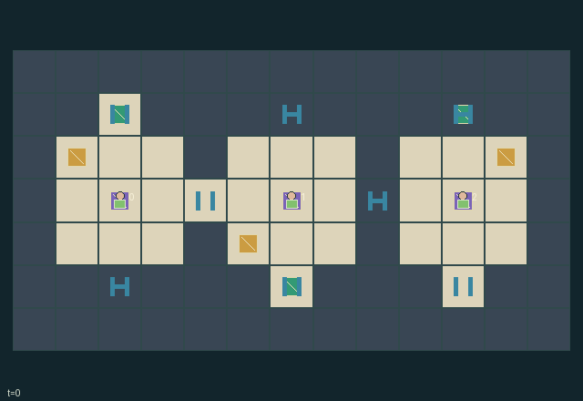

GI136 · Turnhouse Compact

Transport the three owner-specific cargo items to their assigned bays, then escape. Physical couriers may deliver another owner's cargo, and their rotations can enable or obstruct partners.
Identity and original contract
3 independently actionable roles; 10 discrete commands per role; 168 native observation columns per role; original horizon 96 steps. Declared per-step reward range: 0 to 12. Observation regime: fully_observable.
Source SHA-256: cc7856a8a488e1142d45a1afda813dffde0080112144fca73f95123eb4938895
The objective, rewards, population, map and horizon remain original. A preview is not a success claim.
Objective and gameplay
Transport the three owner-specific cargo items to their assigned bays, then escape. Physical couriers may deliver another owner's cargo, and their rotations can enable or obstruct partners.
Limited-energy control turns rotate all live room occupants and undelivered objects, alter connected passages, and may conflict with other operators. Cargo or couriers occupying a closing passage hold it open. Rewards combine shared, owner and carrier interests.
- Three 3x3 rooms have centres (2,3), (6,3), (10,3). Each has two adjacent ports: orientation 0 NE, 1 ES, 2 SW, 3 WN.
- From a cell within distance 1 of a room centre, spend one energy to request a quarter turn. Same-sign requests agree; opposite signs cancel free of charge.
- A turn physically rotates all active couriers and undelivered cargo inside that room. Compass movement happens after rotation.
- Bridges at (4,3) and (8,3) require both facing ports. A north/south bay requires its room's port. Occupied passages stay open until vacated.
- Any courier may carry one cargo and deliver it to that cargo's public destination. Each delivery gives everyone 1, its carrier 1 more, and its owner 3 more.
- Empty-handed couriers may escape from any north/south bay. All escaped ends play; if all three cargo items were delivered, everyone also receives 4.
- Four turn energy per role is finite. Dropped cargo can hold a passage open, but must still reach its destination for delivery reward.
Ending: All three couriers have escaped, even with undelivered cargo. If all cargo was delivered as well, the last escape grants a shared completion bonus. Otherwise truncate at 96 steps.
Action timing: Input-state masks are applied. Station requests are aggregated first: unanimous CW or CCW requests execute one turn; opposite signs cancel with no energy cost. Every supporting operator pays one if a turn executes. Contents rotate, passages/interlocks refresh, then compass move attempts resolve with old occupancy measured after rotation. Cargo interactions follow moves; escape is last. Empty-handed inactive couriers have only wait. No-op is always legal.
What this game explores
Joint transport & shared access: Positions, load geometry, occupancy and persistent access constrain whose action can succeed next. Distinguish physical handoff, shared controls and simultaneous force from a cosmetic cooperation label.
These are questions supported by rule structure, not observed learning effects.
Play it: operating walkthrough
crucibles play --game gi136Keep Python running and open its printed address. Select this game, set a seed and press Create session. The game itself is always English.
Assign a role range to Host with Assign / take over, or Assign all roles. Invite a second participant with Create player invitation, then assign a disjoint subset. Every original role is available.
For every owned role choose a legal command and press Queue. Arrow keys / WASD queue a declared directional action for the current role camera when available. Space or Advance one joint step advances everyone together. Non-directional games use the selectors.
Unqueued roles use the labelled untrained uniform-legal policy. Take over or release roles before the next step without resetting. Full-state debug is privileged and permanently logged; role cameras preserve permissions. Close the session to retain logs. Server restart does not restore sessions.
Complete command reference
IDs and English labels exactly match the manifest. Availability depends on role, resources, location and phase. An available action can still have no productive effect.
0·Wait
1·Attempt north after any room rotation
2·Attempt east after any room rotation
3·Attempt south after any room rotation
4·Attempt west after any room rotation
5·Request clockwise turn at adjacent room station
6·Request counterclockwise turn at adjacent room station
7·Pick up cargo here; deliver carried cargo at its destination
8·Drop carried cargo here
9·Escape from a north/south bay while empty-handed
Roles and capability identifiers
These original role names describe capabilities, not interchangeable skins. Check each owned role's legal selector before planning handoffs.
agent_0·Owner of cargo 0 destined for middle south bay
agent_1·Owner of cargo 1 destined for right north bay
agent_2·Owner of cargo 2 destined for left north bay
Information and observation permissions
All room geometry, orientation, control commitments, energy, courier/cargo positions, destinations, gates, interlocks and event flags are public. Policy observations include the exact live tile map. No private state is used in this game.
The GIF is full-state debug and may reveal hidden entities or private state. Train on obs[agent], not the picture, state tree or another role's private row. Field slices and visibility are in the original manifest.
Reinforcement-learning integration
import jax
from crucibles_jaxmarl import make
env = make("gi136")
key = jax.random.PRNGKey(0)
key, rk, ak, sk = jax.random.split(key, 4)
obs, state = jax.jit(env.reset)(rk)
actions = env.sample_actions(ak, state)
obs, state, rewards, dones, info = jax.jit(env.step_env)(sk, state, actions)
done = dones["__all__"]Observations are float32 vectors of width 168; actions are scalar int32; masks have 10 entries. Supply all 3 roles each transition. Masked sampling is an engineering reference, not a trained learner.
step_env retains terminal data without reset. step performs outer autoreset and keeps terminal data in info["raw_state"] and info["raw_observation"]. Use dones["__all__"] for episode boundaries; separate completion, failure and time limit in analysis.
JIT or vmap equal identities and shapes. Split independent reset, policy and transition keys. Group different shapes explicitly; do not shrink the population or horizon. Host rendering stays outside training.
Training questions and fair evaluation
Define valid completion from the objective before fitting. Preserve original rewards and also report real deliveries/services, losses, resource state, unresolved episodes and per-role returns. Animation is not a reward signal.
Positions, load geometry, occupancy and persistent access constrain whose action can succeed next. Distinguish physical handoff, shared controls and simultaneous force from a cosmetic cooperation label.
Compare memory, communication or centralized critics under matched actor information. Declare critic access; keep actor inputs role-filtered. Match partner/opponent distributions, masks, compute and checkpoint selection. Final tests never enter fitting or selection.
Independent training runs or source-pairing blocks are inferential units; episodes from one policy are not independent training replications. Save hashes, keys, versions, device, time and cost. Negative, zero, failed and indeterminate outcomes are valid. No trained checkpoint or target score is supplied.
Classification and evidence
Overlapping editorial labels are reading aids, not proof of novelty, difficulty, strategic equivalence or learning effects.
- Joint transport & shared access
- Evidence
manifest.task.objective: Transport the three owner-specific cargo items to their assigned bays, then escape. Physical couriers may deliver another owner's cargo, and their rotations can enable or obstruct partners.
- Evidence
manifest.actions.5: Request clockwise turn at adjacent room station
- Evidence
manifest.actions.6: Request counterclockwise turn at adjacent room station
Source, receipts and preview limits
The world-only English GIF replays saved untrained legal actions through the original kernel. At most 25 actual endpoints include initial and terminal state; no invented interpolation. It is full-state debug, not the role observation.
Original source, observation slices, manifest and mechanism
Native receipt · Presentation receipt
Engineering passes do not establish learning. Nonzero floating differences remain recorded and undetermined; no new tolerance was introduced. Human scores remain unverified.